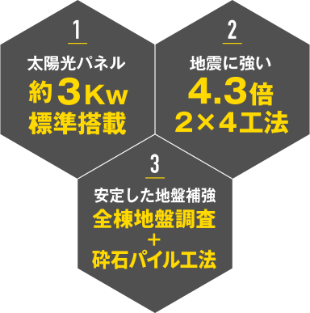
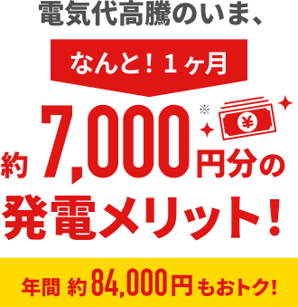
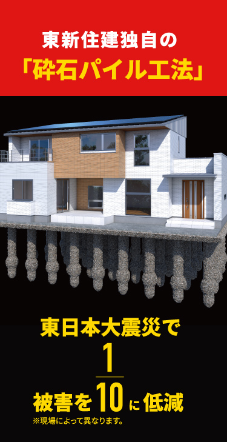
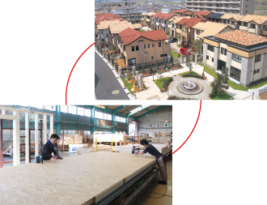
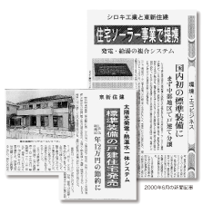

TOP
物件一覧
お客様の声
安さの秘密
お問い合わせ
物件一覧
お問い合わせ
次世代PV住宅
発電シェルターハウスとは？
現代の家族観やライフスタイルに合わせた
次世代のコンパクトな暮らしに、
太陽光発電システムを標準仕様とし
再生可能エネルギー源を活用するPV住宅です。
東新住建独自の4.3倍2×4工法による
高い耐震性と売電収入で
家族の安全と家計を守ります。
物件はこちら
こんなお悩みはありませんか？
1
太陽光パネル
約3kw標準搭載
2
地震に強い
4.3倍2×4工法
3
安定した
地盤補強
4
2人くらいに
ちょうどいい
コンパクトな間取り
安さの秘密はこちら！
▶︎

電気代
から
かぞくを守る！
太陽光発電が、
毎月の家計を助ける！

※3.3kW搭載の場合でのシミュレーション
※太陽光発電の自家消費の電気代＋売電収入
※2025年売電単価15円／kWhで計算
※3人家族、自家消費5割で算出
※物件によって異なる場合があります
物件検索
名古屋
尾張東
尾張西
あま
東海
知多
三河
岐阜
三重
すべての物件はこちら
地震
から
かぞくを守る！
耐震構造
SEISMIC STRUCTURE
全壊10.1万棟、
半壊・一部損壊28.9万棟以上。
大惨事を引き起こした阪神・淡路大震災ですが、
2011年の東日本大震災でも津波による被害を除けば98％が当面の暮らしに支障がないという結果が出ています。
東新住建は末永く安心して暮らしていただくため、耐震・耐火性など優れた特性をもつ「2×4（ツーバイフォー）工法」を採用しています。2×4工法は、地震の衝撃を天井・壁・床の6面全体でバランス良く吸収するため水平・垂直、両方からの力に優れた強さを発揮します。
柱や梁を組み合わせる在来工法と違い、ツーバイフォー住宅は「面構造」を基本にしているため、6面体ができあがり、家全体が強いモノコック構造（一体構造）となります。
地震や台風などの力を建物全体で受け止め、荷重を一点に集中させることなく全体に分散させることで、外力に対して抜群の強さを発揮します。
国土交通省大臣認可
2×4パネルの壁量を4.3倍に強化
東新住建は、2×4パネルをさらに進化させた従来より耐力を約140％に高めた「壁量4.3倍」パネルを開発。高品質ステンレス釘の採用や、釘ピッチをより密にした仕様など、様々な工夫により耐振性能を向上させました。この新工法では、従来の「壁量3.0倍」から、「壁量4.3倍」にすることで1.4倍以上の耐力アップを実現しました。
2×4パネルは
すべて専属工場生産
柱や梁の代わりに、均一サイズの角材と合板を接合して作られるパネルで、壁、床、天井、屋根などを構築する2×4工法。その強さは、パネル自体の品質に支えられています。東新住建は本社が位置する稲沢市に自社パネル工場を建設。徹底した品質管理のもと、高品質なパネルを安定供給できる体制を整えています。
2014年より全棟に
国産材2×4を標準使用。
国の重要課題である国産材の普及に貢献し、
これまでに約2,000棟建築しています。
物件検索
名古屋
三河
みよし・知立・岡崎
安城 他
東海・知多
東海・大府・知多
半田 他
尾張東
豊明・日進・東郷町
春日井・小牧 他
尾張西
清須・稲沢
一宮 他
岐阜
三重
すべての物件はこちら
液状化
から
かぞくを守る！
頑丈な基礎
SOLID FOUNDATION
まずは全棟、地盤調査を実施。
現場によって最適な改良を行い
頑丈な基礎を築きます。
通常の基礎作りはこの3つですが…
東新住建はさらに！

地震対策でもっとも注意すべきは土地の液状化です。
そこで自然石による杭を打ち込み、地盤沈下や建物の傾きを防ぐのが砕石パイル工法。東日本大震災でも効果が確かめられています。
液状化を阻止する東新住建独自の地盤改良技術
砕石パイル工法は、水はけのよい砕石を地面に空けた縦穴に詰めてパイルを形成うことで地盤を強化する工法です。パイル形成時の加圧作業により軟弱な土壌もしっかりと踏み固められ、何十本もの摩擦抵抗の高い丈夫な砕石柱が建物の基礎を支えます。
地元の採石場を活用。
地産地消の技術です。
環境を汚さず、半永久的に効果が続く砕石パイル工法。材料は天然石のみで、コンクリート基礎杭や薬剤などの廃棄物も出ないエコ技術ですが、さらに私たちは地元犬山市で採石を行うことで、地産地消の体制をつくっています。
地盤20年保証
お引き渡し後20年間、地盤調査や地盤補強工事の瑕疵により住宅が不同沈下した場合、事業者に対して保証する保険に加入しています。万が一の時も安心です。
物件検索
名古屋
三河
みよし・知立・岡崎
安城 他
東海・知多
東海・大府・知多
半田 他
尾張東
豊明・日進・東郷町
春日井・小牧 他
尾張西
清須・稲沢
一宮 他
岐阜
三重
すべての物件はこちら
コンパクト
な
間取りで
ムダのない暮らし
発電シェルターハウスに
お住まいのお客様の声
CASE
01
電気代を気にせず生活できて、売電収入も！
我慢いらずの暮らしで、家族で外食も楽しんでいます。
名古屋市 I様
ご夫婦、長女、次女
インタビューをよむ
CASE
02
名古屋市内、駐車場2台、手の届く価格！
プラス太陽光でゆとりある暮らしが叶いました。
名古屋市 T様
ご夫婦、長女、長男
インタビューをよむ
CASE
03
名古屋市内で駅近の好立地。
ちょうどいいサイズ感＆太陽光発電で生活にも余裕が。
名古屋市 K様
ご本人様、猫一匹
インタビューをよむ
発電シェルターハウス
安さの秘密！
日々の暮らしにちょうどいい
徹底的にムダを省いた設計！
近隣住宅との共有部分をカット、駐車場は必要な数を見極めて用意、2人くらいにちょうどいい間取りなど、「本当に必要か」見直しを繰り返したシンプルな設計により、大幅なコストダウンを実現しました。
高い品質を保ちながら
コストを抑えて低価格を実現！
東新住建は分譲住宅だけではなく、注文住宅の設計・建築のほか建築請負も行う全国展開で年間約500棟を建設。建物に使用する2×4パネルはすべて専属工場で徹底した品質管理のもと生産しています。
数多くの需要に対応するスケールメリットで、市場の落ち込み等が起こった場合にも建築資材を安定的に調達することができ、高い品質を保ちながら建物にかけるコストを最低限に抑えることができます。

人件費・広告費をカット！
オンライン販売に特化することで、チラシ等の広告費やセールスの人件費など販売にかかるコストを大幅に削減。これにより販売価格を抑えることが可能になりました。
これだけでは実現できない
高品質低価格の秘密が
まだまだあります。
詳しくは担当スタッフへ
お尋ねください
よくあるご質問
頭金がありませんが、住宅ローンは組めますか？
家賃を払いながら、頭金を貯めるのは大変です。
頭金0円でも住宅ローンを貸してくれる金融機関がありますのでご案内いたします。
地盤改良はどのようにしていますか？
地盤調査後、その土地にあった最適の工法で、しっかりと地盤改良を行います。
なかでも最新の【砕石パイル工法】は地震の揺れや液状化に強く安心で、環境汚染もなく安全で、土地工事の省エネ化も実現する先端技術です。
当社の住まいは標準で地盤保証２０年になっております。
「地盤から考える家づくり」をモットーとしており、「地盤の強さ」+「建物の強さ」が「地震に対しての強さ」と考えております。
【液状化対抗地盤改良について】
途中で、買取単価が変わることってありますか？
固定価格買取制度では、決定した単価が買取期間中に変更されることは、基本的にはありません。同制度では「例外的なデフレやインフレが起こった場合のみ、単価変更の可能性がある」としています。（法第3条第8項）
物件検索
名古屋
三河
みよし・知立・岡崎
安城 他
東海・知多
東海・大府・知多
半田 他
尾張東
豊明・日進・東郷町
春日井・小牧 他
尾張西
清須・稲沢
一宮 他
岐阜
三重
すべての物件はこちら
東新住建は
太陽光利用にいち早く着目。
世の中に先駆けて、
一般住宅へも採用しました。
2000
国内初太陽光発電付き住宅への研究開発開始。
住宅用ソーラーシステムを発表。
私たちはシロキ工業と提携し、太陽光発電と熱温水を一体化したシステム「ヘリオス」を発表。戸建住宅としては国内初の標準装備を実現し、業界から大きな注目を浴びました。このヘリオスは発電と給湯を複合したシステムで、お客さまにも十分な省エネ効果をもたらすとあって、ご好評をいただきました。

2002
環境共生型の大型タウン開発。
まだ太陽光発電そのものが珍しかったころ、私たちは大型タウン開発の分野でも、太陽光発電装置を搭載した住宅を建設しました。たとえば「ヒューマンネイチャー大垣緑園」では、太陽光発電とオール電化を組み合わせた省エネ住宅を設け、環境を守る多彩なトライアルを実践することで、自然共生の街の実現をめざしました。この試みは現在の事業にも引き継がれています。
太陽光発電住宅を設置したヒューマンネイチャー大垣緑園
2005
愛知万博瀬戸会場にて「ウェルカムハウス」を建設。エコロジーハウスを提案。
2011
太陽光発電の家モデルハウス建築。スマートハウスの推進。
2015
独自の大容量発電住宅。
「発電シェルターハウス」の誕生。
10kWの大容量パネルを標準装備して業界を驚かせた発電シェルターハウス
2017
駅近で合理的な暮らし「DUP レジデンス」開発。
駅近エリアに限定したコンパクトな住まいで、リーズナブルな価格とランニングコストの負担を抑えることで、ゆとりある快適かつ上質な都市生活を実現。お2人様ぐらいにちょうどいいサイズで、世代を問わず幅広いニーズに応える、新しいカタチの住まいです。
2020
「そだつプロジェクト」開発。
リーズナブルな価格帯と、「売れる」「貸せる」を前提にした設計で、いつでも誰でも「自分の家を持つこと」を可能にした新しい一戸建て。一生に一度のマイホームというこれまでの考え方を超えて、暮らしに合わせてカジュアルに購入や住み替えしやすいしくみをつくりました。
2022
分譲平屋限定スペシャルサイト「平屋回帰」公開。
暮らし方や価値観の多様化が進む今、注目を集める「平屋」限定のスペシャルサイトを公開。
「平屋回帰」はリクルートより「2023年の住まいのトレンドキーワード」としても発表されました。
2023
たくさんのご家族から支持を得る
「DUP レジデンス」「そだつプロジェクト」
「平屋」に、
世に先駆けて蓄積してきた
太陽光発電のノウハウを組み合わせた
「発電シェルターハウス仕様」
を発表！
物件検索
名古屋
三河
みよし・知立・岡崎
安城 他
東海・知多
東海・大府・知多
半田 他
尾張東
豊明・日進・東郷町
春日井・小牧 他
尾張西
清須・稲沢
一宮 他
岐阜
三重
すべての物件はこちら


 2011年の東日本大震災でも津波による被害を除けば98％が当面の暮らしに支障がないという結果が出ています。
2011年の東日本大震災でも津波による被害を除けば98％が当面の暮らしに支障がないという結果が出ています。